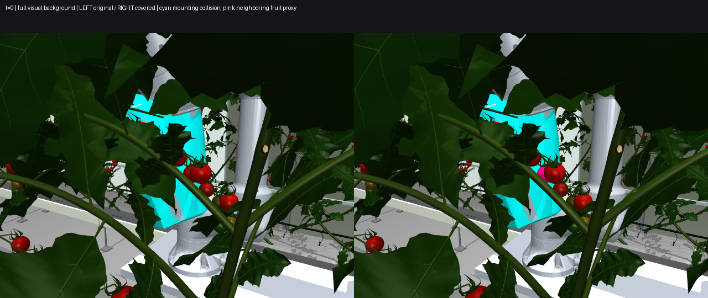

106개 배경 송이에 실제 장애물을 추가하니, 시작부터 white 송이(식물19 / 송이2 / Tomato_05)가 고리 마운트 g410과 2.234mm 겹쳤습니다. 목표 과실 접촉 허용 대상이 아닙니다.
11개 경로가 모두 실패한 결과가 아닙니다. PHASE 1 FAIL에 따라 경로 질의 0회 / 접근 물리 실행 0회입니다. 실제 정지 물리 A/B만 각 2초 실행했습니다.
왼쪽 원본 / 오른쪽 보강. 청록색 마운트, 분홍색 주변 과실 충돌체. 검사 영상은 배경 시각 메시를 숨기고 충돌체를 표시합니다. 물리 결과는 수정하지 않았습니다.

| collision_coverage | PASS |
| transform_consistency | PASS |
| initial_robot_collision | FAIL |
| target_plant_stability | PASS |
| positive_control_detection | PASS |
| negative_control_false_positive | PASS |
| model_hash_consistency | PASS |
| runtime_validation | FAIL |
목표 식물 최대 변위 원본/보강 모두 2.968mm. 보강 모델 로봇 최대 이동 3.727mm. 새 충돌체 때문에 목표 식물 동역학이 바뀐 증거는 이 2초 시험에서 없었습니다.
결과 JSON | 변환 재현 검사 | 양성/음성 대조군 | MJB/XML 위치와 해시 | 실제 정지 접촉 기록